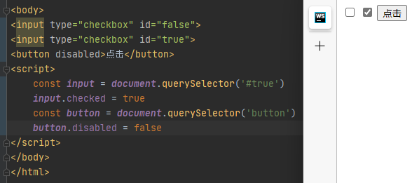
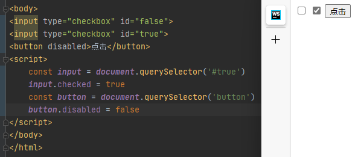

flex-direction设置主轴方向flex-direction属性决定主轴的方向（即项目的排列方式）
注意：主轴和侧轴是会变化的，就看flex-direction设置谁为主轴，剩下就是侧轴，而我们的子元素是跟着主轴来排列的
| 属性值 | 说明 |
|---|---|
| row | 默认值 从左到右 |
| row-reverse | 从右到左 |
| column | 从上到下（Y轴为主轴） |
| column-reverse | 从下到上 |
justify-content设置主轴上的子元素排列方式jusitiy-content属性定义了项目在主轴上的对齐方式
注意：使用这个属性之前一定要确定号主轴是哪个
| 属性值 | 说明 |
|---|---|
| flex-start | 默认值 从头部开始，如果主轴是X轴，则从左到右 |
| flex-end | 从尾部开始排列 |
| center | 在主轴居中对齐（如果主轴是X轴则水平居中） |
| space-around | 平分剩余空间 |
| space-between | 先两边贴平 再平分剩余空间（重要） |
flex-wrap设置子元素是否换行默认情况下，项目都排在一条线（又称“轴线”）上。flex-wrap属性定义，flex布局默认是不换行
| 属性值 | 说明 |
|---|---|
| nowarp | 默认值 不换行 |
| wrap | 换行 |
align-items 设置侧轴上的子元素排列方式（单行）该属性是控制子项再侧轴（默认是y轴）上的排列方式 在子项为单项（单行）的时候使用
| 属性值 | 说明 |
|---|---|
| flex-start | 默认值 从下到上 |
| flex-end | 从下到上 |
| center | 挤在一起居中（垂直居中） |
| stretch | 拉伸 |
align-content设置侧轴上的子元素的排列方式（多行）设置子项在侧轴上的排列方式并且只能用于子项出现 换行 的情况（多行），在单行下是没有效果的
| 属性值 | 说明 |
|---|---|
| flex-start | 默认值在侧轴的头部开始排列 |
| flex-end | 在侧轴的尾部开始排列 |
| center | 在侧轴中间显示 |
| space-around | 子项在侧轴平分剩余空间 |
| space-between | 子项在侧轴先分布两头，再平分剩余空间 |
| stretch | 设置子项元素高度平分父元素高度 |
flex布局子项常见属性flex属性定义子项目分配剩余空间，用flex来表示多少份数
xxxxxxxxxx31.item{2flex:<number>; /*default*/3}
JavaScript是一种运行在客户端(浏览器)的编程语言,实现人机交互效果
mdn web docs 进行
ECMAScript:
规定了js基础语法核心知识
Web APIs：
直接写在html文件内，用script标签包住
规范 ：script标签写在
xxxxxxxxxx61<body>2 <script>3 // 页面弹出警示框4 5 </script>6</body>代码写在以 .js结尾的文件里，通过script标签引入到html页面中。
xxxxxxxxxx51<body>2 <script src="my.js">3 // 中间不要写内容，默认忽略4 </script>5</body>代码写在标签内部
xxxxxxxxxx31<body>2 <button onclick="alert('逗你玩~~~')">点我月薪过万</button>3</body>1.3 JavaScript注释和结束符
单行注释
符号：//
快捷键：ctrl+/
xxxxxxxxxx51<body>2 <script src="my.js">3 // 这是单行注释噢4 </script>5</body>多行注释
符号：/* */
快捷键：shift+alt+a
xxxxxxxxxx71<body>2 <script src="my.js">3 /*4 这是多行注释噢5 */ 6 </script>7</body>
人和计算机打交道的规则约定
语法1：document
xxxxxxxxxx11documet.write('要输出的内容')作用：向body内输出内容
注意：如果输出的内容写的时标签，也会被解析成网页元素
语法2：alert
xxxxxxxxxx11alert('要弹出的内容')作用：页面弹出警告对话框
语法3：console
xxxxxxxxxx11console.log('控制台打印')作用：控制台输出语法，程序员调试使用
语法：prompt
xxxxxxxxxx11prompt('请输入您的姓名：')作用：显示一个对话框，对话框中包含一条文字信息，用来提示用户输入文字
在计算机科学中，字面量（literal）是在计算机中描述 事/物
字面量是值的表示方式，而变量是存储值的容器。
变量是计算机存储数据的“容器”，变量不是数据本身
xxxxxxxxxx11let 变量名xxxxxxxxxx11变量 = 数据 xxxxxxxxxx11let 变量名 = 数据程序在内存中申请的一块用来存放数据的小空间
起名要有意义
遵循小驼峰命名法
var声明
数组（Array），将一组数据存储再单个变量名下的方式，数组可以存储任何类型的数据
xxxxxxxxxx11let 数组名 = [数据1, 数据2, 数据3, . . . ,数据n]xxxxxxxxxx11使用数组： 数组名[索引号] // 从0开始使用const声明的变量称为常量，当某个变量永远不会改变时，就可以使用const
常量不允许重新赋值，声明时必须赋值
整数、小数、整数、负数，都是数字类型
注意：JavaScript是弱数据类型语言，只有赋值了之后才知道是什么类型
+、 - 、* 、/ 、%(取模)
NaN：代表计算错误
通过单引号(' ')、双引号(" ")或反引号(`)包裹的数据都叫字符串
必要时使用转义符 \
运算符：+ 可以实现字符串拼接
xxxxxxxxxx41<script>2 let age = 183 document.write(`我今年${age}岁了`)4</script>只有两个固定的值true（真）、false（假）
只声明变量，不赋值的情况下，变量的默认值为undefined
代表"无"、"空" 或 "值未知"
使用场景：将来有个变量里面存放的是一个对象，但是对象还没创建好，可以先给个null
xxxxxxxxxx21console.log(undefined +1) // = NaN2console.log(nulll +1) // = 1通过typeof关键字检测数据类型
xxxxxxxxxx21typeof x // (常用写法)作为运算符2typeof(x) // 函数形式某些运算符被执行时，系统内部自动将数据类型进行转换
+号作为正号解析可以转换成数字型
xxxxxxxxxx11console.log(+'123') // 此时123将转换为数字型任何数据和字符串相加的结果都是字符串
写代码告诉系统要转换成什么数据类型
xxxxxxxxxx31Number() // 转换为数字型2 parseInt // 只保留整数3 parseFloat // 可以保留小数输入两个数，计算和，打印到弹窗中
xxxxxxxxxx41let num1 = Number(prompt('请输入第一个数'))2let num2 = Number(prompt('请输入第二个数'))3let sum = num1 + num24 alert(`这两个数和为：${num1 + num2}`)xxxxxxxxxx621<html lang="en">3<head>4 <meta charset="UTF-8">5 <meta name="viewport"6 content="width=device-width, user-scalable=no, initial-scale=1.0, maximum-scale=1.0, minimum-scale=1.0">7 <meta http-equiv="X-UA-Compatible" content="ie=edge">8 <title>Document</title>9 <style>10 h2 {11 text-align: center;12 }13
14 table {15 border-collapse: collapse;16 height: 80px;17 margin: 0 auto;18 text-align: center;19 }20
21 th, td {22 padding: 5px 20px;23 }24
25 table, th, td {26 border: 1px solid #000000;27 }28 </style>29</head>30<body>31<h2>订单确认</h2>32
33<script>34 // 用户输入35 let price = Number(prompt('请输入商品价格'))36 let num = Number(prompt('请输入商品数量'))37 let address = prompt('请输入收货地址')38 // 计算总价39 let total = price * num40 // 页面打印41 document.write(`42 <table>43 <tr>44 <th>商品名称</th>45 <th>商品价格</th>46 <th>商品数量</th>47 <th>总价</th>48 <th>收货地址</th>49 </tr>50 <tr>51 <td>小米手机</td>52 <td>${price}元</td>53 <td>${num}</td>54 <td>${total}元</td>55 <td>${address}</td>56 </tr>57 </table>58
59 `)60</script>61</body>62</html>众多的JavaScript的运算可以根据所需表达式的个数，分为一元运算符、二元运算符、三元运算符
符号：++
作用：让变量的值+1
语法：
前置自增：
xxxxxxxxxx21let i = 12++i // 每次加一后置自增：
xxxxxxxxxx21let i = 12i++ //每次加一区别：
单独使用没有区别
xxxxxxxxxx31++i +1 =3 //前置自增:先自加再使用（++在前，先加）21++ +1 =2 //后置自增:先使用再自增（++在后，后加）3//前自增的运算级别高先自增再相加，后自增为先相加再（i自增）注意是i自增，不是结果自增。用法：
'>'
'<'
'>='
'<='
==
===: 左右两边是否类型和值都相等
!=
!==: 左右两边石佛不全等‘
字符串比较，按照ASCII码比较
NaN不等与任何值，包括它本身
尽量不要比较小数
用于解决多重条件判断
例如：5 < num < 10
xxxxxxxxxx11num > 5 && num < 10| 优先级 | 运算符 | 顺序 |
|---|---|---|
| 1 | 小括号 | （） |
| 2 | 一元运算符 | ++ -- ! |
| 3 | 算数运算符 | 先 * / % 后 + - |
| 4 | 关系运算符 | > >= < <= |
| 5 | 相等运算符 | == =! = ! |
| 6 | 相等运算符 | 先 && 后 | | |
| 7 | 赋值运算符 | = |
| 8 | 逗号运算符 | , |
表达式：表达式是可以被求值的代码，JavaScript引擎会将其计算出一个结果
语句：是一段可以执行的代码
比如：proompt()可以弹出一个输入框，还有if语句 for循环语句等等
区别：
if语句三种使用：单分支、双分支、多分支
xxxxxxxxxx31if (条件) {2 满足条件要执行的代码3}xxxxxxxxxx51if (条件) {2 1、满足条件要执行的代码3} else {4 2、不满足条件要执行的代码5}括号内条件为true时，执行第一串代码
括号内条件为false时，执行第二串代码
xxxxxxxxxx91练习：判断是否为闰年2// 用户输入3let year = Number(prompt('请输入年份'))4// 判断输出5if (year % 4 === 0 && year % 100 !== 0 || year % 400 !== 0) {6 alert(`${year}是闰年`)7} else {8 alert(`${year}不是闰年`)9}xxxxxxxxxx91if (条件1) {2 代码13} else if (条件2) {4 代码25} else if (条件3) {6 代码37} else {8 代码n9}语法：
xxxxxxxxxx11条件 ? 满足条件执行的代码 : 不满足条件执行的代码使用场景：比if双分支更简单的写法，可以使用三元表达式
一般用同于取值
xxxxxxxxxx21let max = 3 < 5 ? 5 : 3 2// 定义一个变量max 如果3 < 5为真，则max=5，否则max=3xxxxxxxxxx61// 数字补02// 用户输入3let num = +prompt('请输入数字')4// 判断输出5num = num < 10 ? '0' + num : num6alert(num)
语法：
xxxxxxxxxx111switch (数据) {2 case 值1:3 代码14 break5 case 值2:6 代码27 break8 default:9 代码n10 break11}释义：
注意：一定要加上break
循环重复执行一些操作
释义：在满足条件期间重复执行某些代码
语法：
xxxxxxxxxx31while (循环条件) {2 要重复执行的代码（循环体）3}当小括号里的条件为true才会进入循环体执行代码
while大括号里代码执行完毕后不会跳出，而是继续回到小括号里判断条件是否满足，若满足又执行大括号里的代码，然后再回到小括号判断条件，直到括号内条件不满足，即跳出
while循环三要素
变量的其实值
终止条件
变量变化量（自增或自减）
xxxxxxxxxx51let i = 1 //变量起始值2while(i<=3){ //终止条件3 document.write('我会循环3次')4 i++ //变量变化量5}作用：重复执行代码
好处：把声明起始值、循环条件、变化值写到一起，让人一目了然，时最常用的循环形式
语法：
xxxxxxxxxx31for (变量起始值; 终止条件; 变量变化量){2 //循环体3}xxxxxxxxxx41// 无限循环2for (; ;) {3 console.log(11)4}语法
xxxxxxxxxx51for (外部声明记录循环次数的变量; 循环条件; 变化值) {2 for (内部声明记录循环次数的变量; 循环条件; 变化值){3 循环体4 }5}循环结束：
区别：
数组（array）是一种可以按顺序保存数据的数据类型
为什么要数组
声明语法
xxxxxxxxxx211、字面量声明数组2let 数组名 = [数据1、数据2、数据4,,数据5]xxxxxxxxxx212、使用new Array 构造函数声明2let arr = new Array(1,2,3,4)数组里面可以存放任意数据类型
可以通过下标（从0开始）取值
xxxxxxxxxx11数组名[下标]xxxxxxxxxx41let name = ['马超','赵云','张飞','关羽','黄忠']2 for (let i = 0; i < name.length; i++) {3 document.write(`${name[i]}<br>`)4 }xxxxxxxxxx121let arr = [2, 6, 1, 77, 52, 99, 7]2let max = arr[0]3let min = arr[0]4for (i = 1; i < arr.length; i++) {5 if (arr[i] > max) {6 max = arr[i]7 }8 if (arr[i]<min) {9 min = arr[i]10 }11}12document.write(`最大值为${max},最小值为${min}`)通过下标查值
xxxxxxxxxx11数组[下标]通过下标修改
xxxxxxxxxx31let arr = []2arr[0] = 1 // 此时arr = [1]3arr[1] = 5 // 此时arr = [1,5]xxxxxxxxxx51//给所有的数组元素后面加上指定的字符2let arr = ['pink', 'red', 'green']3for (let i = 0; i < arr.length; i++) {4 arr[i] += '老师'5}通过数组.push()方法将一个或多个元素添加到数组末尾，并返回该数组的新长度
xxxxxxxxxx11arr.push(元素1,元素2,元素3,,元素n)返回值：调用该方法时，新的length属性值将被返回
xxxxxxxxxx11console.log(arr.push('deeppink'))返回值是 arr.length
通过数组.unshift(新增的内容)将一个或多个元素添加到数组的开头，并返回该数组的新长度
xxxxxxxxxx11arr.unshift(元素1,元素2,元素3,,元素n)数组.pop()能删除数组中的最后一个元素，并返回该元素的值
xxxxxxxxxx11arr.pop() //一定要带括号数组.shift()删除数组中的第一个元素，并返回该元素的值
xxxxxxxxxx11arr.shift() //一定要带括号数组.splice()删除指定元素
xxxxxxxxxx11arr.splic(start,deleteCount) //start起始位置，deleteCount删除几个元素（缺省时删到最后）将数组[2, 0, 6, 1, 77, 0, 52, 0, 25, 7]中大于10的数存到新数组中
xxxxxxxxxx61let arr = [2, 0, 6, 1, 77, 0, 52, 0, 25, 7]2let newArr = []3for (let i = 0; i < arr.length; i++) {4 if (arr[i] >= 10) {5 }6}将数组[2,0,6,1,77,0,52,0,25,7]中的0去掉后，形成一个不包含0的新数组
xxxxxxxxxx71let arr = [2, 0, 6, 1, 77, 0, 52, 0, 25, 7]2let newArr = []3for (let i = 0; i < arr.length; i++) {4 if (arr[i] !== 0){5 newArr.push(arr[i])6 }7}xxxxxxxxxx101let arr = [5, 3, 1, 2, 4]2for (let i = 0; i < arr.length - 1; i++) {3 for (let j = 0; j < arr.length - i - 1; j++) {4 if (arr[j] > arr[j+1]) {5 let temp = arr[j]6 arr[j] = arr[j+1]7 arr[j+1] = temp8 }9 }10}一段程序代码中所用到的名字并不总是有效和可用的，而限定这个名字的可用性的代码范围就是这么名字的作用域
作用：提高程序逻辑的局部性，增强可靠性，减少名字冲突
做用于所有代码执行的环境
作用域函数内的代码环境
根据作用域的部不同，变量可以分为：全局变量与局部变量
全局变量
局部变量
function,是被设计为执行特定任务的代码块（代码复用）
说明：函数可以把具有相同或相似逻辑的代码封装起来，通过调用执行这些封装代码逻辑，有利于精简代码方便使用
语法
xxxxxxxxxx41functioon 函数名(参数1，参数2，……，参数n) {2 函数体3 return 返回值4}命名规范
语法
xxxxxxxxxx11函数名(参数1，参数2，……，参数n)注意：声明（定义）的函数必须调用才会真正被执行，使用()调用函数
参数的分类
函数定义时的参数时形参
函数调用时的参数叫实参
语法
xxxxxxxxxx31functioon 函数名(参数1 = 0，…… ) {2 函数体3}释义
当调用斗个函数时，这个函数会返回一个结果出来，这个结果就是返回值
作用
xxxxxxxxxx41function fn(){2 return 203}4let re = fn()释义：
细节：
语法
xxxxxxxxxx61// 定义2let fn = function(参数) {3 console.log('函数表达式')4}5// 调用6fn(参数)语法
使用场景：避免全局变量之间的污染
xxxxxxxxxx41//方式12(function (形参) { console.log(11) })(实参);3//方式24(function (形3参){ console.log(11) }(实参));注意：不需要调用，立即执行，必需要加上 ;
只存在与&& 和 || 中，当满足一定条件会让右边代码不执行
通过左边就能得到整个式子的结果，右边的式子将不会被执行
xxxxxxxxxx11console.log(Boolean('pink')) // 强制转换为布尔型'空字符串'、undefined、null、false、NaN转换为布尔值后为，其余都为true
对象（object）：一种数据类型
是一种无序的数据集合用于描述某个事物
xxxxxxxxxx61let 对象名 = {2 属性:值3 属性:值4 属性:值5}6let 对象名 = new Object{}null 也是 JavaScript 中数据类型的一种，通常只用它来表示不存在的对象。使用 typeof 检测类型它的类型时，结果为 object。
;隔开,隔开空格或者使用
.获得对象中属性对应的值通过对象名[属性名]获得对应属性值
xxxxxxxxxx21对象名.属性名2对象名['属性名']xxxxxxxxxx11对象名.属性 = 新值xxxxxxxxxx11对象名.新属性 = 新值xxxxxxxxxx11delete 对象名.属性xxxxxxxxxx91// 声明2let obj = {3 uname : '刘德华',4 song: function () {5 console.log('冰雨')6 }7}8// 调用9obj.song():分隔,分隔xxxxxxxxxx41for (let k in obj) {2 console.log(k) // 属性名（字符串型，带引号）3 console.log(obj[k]) // 值4}for in不提倡用于遍历数组，因为k时字符串
xxxxxxxxxx651<html lang="en">3<head>4 <meta charset="UTF-8">5 <title>Title</title>6 <style>7 h2 {8 text-align: center;9 }10
11 table, th, td {12 border: solid 1px black;13 border-collapse: collapse;14 }15
16 table {17 width: 600px;18 text-align: center;19 margin: 0 auto;20 }21
22 th {23 background-color: #6E6E6E;24 color: white;25 }26
27 tr:hover{28 background-color: #dcdcdc;29 }30 </style>31</head>32<body>33<table>34 <h2>学生信息表</h2>35 <tr>36 <th>序号</th>37 <th>name</th>38 <th>age</th>39 <th>gender</th>40 <th>hometown</th>41 </tr>42 <script>43 let students = [44 {name: "小明", age: 18, gender: "男", hometown: "河北省"},45 {name: "小红", age: 19, gender: "女", hometown: "河南省"},46 {name: "小刚", age: 17, gender: "男", hometown: "山西省"},47 {name: "小丽", age: 18, gender: "女", hometown: "山东省"}48 ]49
50 for (i=0; i<students.length; i++){51 document.write(`52 <tr>53 <td>${i + 1}</td>54 <td>${students[i].name}</td>55 <td>${students[i].age}</td>56 <td>${students[i].gender}</td>57 <td>${students[i].hometown}</td>58 </tr>59`)60 }61 </script>62</table>63</body>64
65</html>
Math 是 JavaScript 中内置的对象，称为数学对象，这个对象下即包含了属性，也包含了许多的方法。
xxxxxxxxxx21// 圆周率2console.log(Math.PI);xxxxxxxxxx41// 0 ~ 1 之间的随机数, 包含 0 不包含 1[0,1)2Math.random()3// 生成 N ~ M 之间的随机数4Math.floor(Math.random() * (M - N + 1)) + Nxxxxxxxxxx21// 舍弃小数部分，整数部分加12Math.ceil(3.4)xxxxxxxxxx21// 舍弃小数部分，整数部分不变2Math.floor(4.68)xxxxxxxxxx31// 取整，四舍五入原则2Math.round(5.46539)3Math.round(4.849)xxxxxxxxxx21// 找出最大值2Math.max(10, 21, 7, 24, 13)xxxxxxxxxx21// 找出最小值2Math.min(24, 18, 6, 19, 21)xxxxxxxxxx31// 求某个数的多少次方2Math.pow(4, 2) // 求 4 的 2 次方3Math.pow(2, 3) // 求 2 的 3 次方xxxxxxxxxx21// 求某数的平方根2Math.sqrt(16)数学对象提供了比较多的方法，这里不要求强记，通过演示数学对象的使用，加深对对象的理解。

简单类型有叫做基本数据类型或者值类型，复杂数据类型又叫做引用数据类型
值类型：在存储变量中存储的是值本身，因此叫做值类型,放在栈里
引用类型：在存储时变量中存储的仅仅是地址（引用），因此叫做引用数据类型，地址在栈里，内容放在堆里

xxxxxxxxxx51// 案例2let num1 = 103let num2 = num14num2 = 205console.log(num1) // 结果为10
xxxxxxxxxx61let obj1 = {2 age:183}4let obj2 = obj15obj2.age = 206console.log(obj1.age) // 输出 20作用：使用JS去操作html和浏览器
分类：DOM（文档对象模型）、BOM（浏览器对象模型）
建议：const优先，尽量使用const
如果基本数据类型（数组）发生改变则不能将let转换为const
复杂数据类型（数组与对象）发生改变也可以将let转换为const
因为简单数据类型（变量）更改时其内存地址会被更改
复杂数据类型更改时内存地址不会被更改
注意：
xxxxxxxxxx71const names =[] //新数组2names = [1,2,3] //新数组3const obj = {} //新对象4obj = {5 uname:'000' //新对象6}7// 禁止这样使用，内存地址不一样xxxxxxxxxx71const names = []2names[0] = 13names[1] = 24names[2] = 35const obj = {}6obj.uname = '000'7//可以声明空数组/对象后使用追加的方式添加数据DOM(Document Object Model -- 文档对象模型)DOM是浏览器提供的一套专门用来操作网页内容的功能
作用：开发网页内容特效和实现用户交互

浏览器根据HTML标签生成JS对象
把网页内容当对象处理
是DOM里提供的一个最大的对象
他提供的属性和方法都是用来访问和操作网页内容的
网页所有内容都在document里面
根据css选择器来获取DOM元素
xxxxxxxxxx181document.querySelector('css选择器') //里面包含一个或多个有效的css选择器字符串2//举例3<div class="box">123</div>4<div class="box">abc</div>5<p id="nav">导航栏</p>6<ul>7 <li>测试2</li>8 <li>测试3</li>9</ul>10<script>11 const box = document.querySelector('.box')//返回值是选择器匹配的第一个元素，一个HTMLElement对象12 console.log(box)13 const nav = document.querySelector('#nav')14 console.log(nav)15 //获取第一个li16 const li1 = document.querySelector('ul li:first-child')17 console.log(li1)18</script>
返回值是一个NodeList 对象集合（伪数组）
xxxxxxxxxx91<ul>2 <li>测试1</li>3 <li>测试2</li>4 <li>测试3</li>5</ul>6<script>7 const li1 = document.querySelectorAll('ul li')8 console.log(li1)9</script>获取单个元素可以直接修改，当获取多个元素时，只能通过遍历的方式
xxxxxxxxxx51<p id="nav">导航栏</p>2<script>3 const nav = document.querySelector('#nav')4 nav.style.color = 'blue'5</script>
方法：
对象.innerText属性
对象.innerHTML属性
xxxxxxxxxx81// innerText2<div class="box"></div>3<script>4const box = document.querySelector('.box')5console.log(box.innerText) // 获取文字内容6box.innerText = '我是一个盒子' // 修改文字内容7</script>8// innerHTML 

xxxxxxxxxx101// 对象.属性 = 值2<div >3 <img src="../image/1.jpg" height="200" width="960">4</div>5<script>6 const img = document.querySelector('img')7 img.src="../image/2.jpg"8 img.height="300"9 img.width="480"10</script>

xxxxxxxxxx81<body>2 <img src="images/1.webp">3 <script>4 const img_arr = ["images/1.webp","images/2.webp","images/3.webp","images/4.webp","images/5.webp","images/6.webp"]5 const img = document.querySelector('img')6 img.src = img_arr[Math.floor(Math.random()*img_arr.length)]7 </script>8</body>通过JS设置/修改标签元素的样式属性
注意：一定要加上css单位
xxxxxxxxxx191<head>2 <style>3 .box {4 width: 200px;5 height: 200px;6 background-color: pink;7 }8 </style>9</head>10<body>11<div >12 <div class="box"></div>13</div>14<script>15 const box = document.querySelector('.box')16 box.style.width = '300px'17 box.style.height = '300px'18 box.style.backgroundColor = 'hotpink' // 多组单词采取小驼峰命名法19</script>特点：会覆盖前面的类名
xxxxxxxxxx271<style>2 div {3 width: 200px;4 height: 200px;5 background-color: hotpink;6 }7 .box {8 width: 300px;9 height: 300px;10 background-color: pink;11 margin: 100px auto;12 padding: 10px;13 border: 1px solid #000;14 }15 .nav {16 color: red;17 }18</style>19<body>20 <div class="nav">123</div>21<script>22 // 获取元素23 const div = document.querySelector('div')24 // 添加类名，因为class是个关键字，所以用className25 div.className = 'box'26</script>27</body>

className是使用新值
换旧值, 如果需要添加一个类,需要保留之前的类名
xxxxxxxxxx271<style>2 div {3 width: 200px;4 height: 200px;5 background-color: hotpink;6 }7 .box {8 width: 300px;9 height: 300px;10 background-color: pink;11 margin: 100px auto;12 padding: 10px;13 border: 1px solid #000;14 }15 .nav {16 color: red;17 }18</style>19<body>20 <div class="nav">123</div>21<script>22 // 获取元素23 const div = document.querySelector('div')24 // 添加多个类名，因为class是个关键字，所以用className25 div.className = 'nav box'26</script>27</body>
注意：当一个元素有多个类名时，它的样式取决于style表中的定义顺序，而不是HTML中的类名顺序。style表中后定义的类名会覆盖前面的类名。
为了解决className 容易覆盖以前的类名，我们可以通过classList方式追加和删除类名
xxxxxxxxxx251<style>2 div {3 width: 200px;4 height: 200px;5 background-color: pink;6 }7
8 .active {9 width: 300px;10 height: 300px;11 background-color: hotpink;12 margin-left: 100px;13 }14</style>15<body>16 <div class="one"></div>17 <script>18 //add是个方法 添加 追加 类名不加19 box.classList.add('active')20 // remove() 移除 类21 box.classList.remove('one')22 // toggle切换类 检查是否有该类名，没有就加上，有就删掉23 box.classList.toggle('one')24 </script>25</body>check、disable
xxxxxxxxxx281//获取值：DOM.对象.属性名2<body>3<input type="text" value="电脑">4<script>5 const input = document.querySelector('input') //获取DOM对象6 console.log(input.value) // 获取对象属性值，innerHTML不能获取表单内容7</script>8//修改值：DOM.对象.属性名 = 新值9<body>10<input type="text" value="电脑">11<script>12 const input = document.querySelector('input') //获取DOM对象13 input.type = 'password' // 修改对象属性值14</script>15//16<body>17<input type="checkbox" id="false">18<input type="checkbox" id="true">19<button disable>点击</button>20<script>21 // 使用 checked 来判断是否勾选复选框22 const input = document.querySelector('#true')23 input.checked = true24 // 使用 disabled 来判断是否禁用 button25 const button = document.querySelector('button')26 button.disabled = flase // 默认为false 不禁用27</script>28</body>

 

自定义属性必须以data-开头
通过dataset获取自定义属性，返回值是一个对象
xxxxxxxxxx121<body>2<div data-id="1" data-spm="111">1</div>3<div data-id="2">2</div>4<div data-id="3">3</div>5<div data-id="4">4</div>6<div data-id="5">5</div>7<script>8 const one = document.querySelector('div')9 console.log(one.dataset) //获取自定以属性的集合10 console.log(one.dataset.id) //获取对应的自定义属性11</script>12</body>
网页中每隔一段时间需要
自动执行一段代码，定时器的返回值是一个id数字
xxxxxxxxxx31setInterval(函数,间隔时间) //每间隔多长时间（单位是毫秒 1s = 1000ms），调用一次函数2let n = setInterval(function () {console.log(`每一秒钟我会出实现一次<br>`)},1000)3console.log(n)xxxxxxxxxx31let n = setInterval(function () {console.log(`每一秒钟我会出实现一次<br>`)},1000)2clearInterval(n) // 关闭定时器3n = setInterval(function () {console.log(`每一秒钟我会出实现一次<br>`)},1000) // 重新开启定时器xxxxxxxxxx301<html lang="en">3<head>4 <meta charset="UTF-8">5 <meta name="viewport" content="width=device-width, initial-scale=1.0">6 <title>Document</title>7</head>8<body>9<textarea name="" id="" cols="30" rows="10">10 用户注册协议11 欢迎注册成为京东用户！在您注册过程中，您需要完成我们的注册流程并通过点击同意的形式在线签署以下协议，请您务必仔细阅读、充分理解协议中的条款内容后再点击同意（尤其是以粗体或下划线标识的条款，因为这些条款可能会明确您应履行的义务或对您的权利有所限制）。12 【请您注意】如果您不同意以下协议全部或任何条款约定，请您停止注册。您停止注册后将仅可以浏览我们的商品信息但无法享受我们的产品或服务。如您按照注册流程提示填写信息，阅读并点击同意上述协议且完成全部注册流程后，即表示您已充分阅读、理解并接受协议的全部内容，并表明您同意我们可以依据协议内容来处理您的个人信息，并同意我们将您的订单信息共享给为完成此订单所必须的第三方合作方（详情查看13 </textarea>14<br>15<button class="btn" disabled>我已经阅读用户协议(5)</button>16<script>17 const btn = document.querySelector('.btn') //获取按钮18 let n = 519 let timer = setInterval(function () {20 n--21 btn.innerHTML = `我已经阅读用户协议(${n})`22 if (n === 0) {23 btn.innerHTML = `我同意该协议`24 btn.disabled = false25 clearInterval(timer)26 }27 }, 1000)28</script>29</body>30</html>xxxxxxxxxx1581<html lang="en">3
4<head>5 <meta charset="UTF-8"/>6 <meta http-equiv="X-UA-Compatible" content="IE=edge"/>7 <meta name="viewport" content="width=device-width, initial-scale=1.0"/>8 <title>轮播图点击切换</title>9 <style>10 * {11 box-sizing: border-box;12 }13
14 .slider {15 width: 560px;16 height: 400px;17 overflow: hidden;18 }19
20 .slider-wrapper {21 width: 100%;22 height: 320px;23 }24
25 .slider-wrapper img {26 width: 100%;27 height: 100%;28 display: block;29 }30
31 .slider-footer {32 height: 80px;33 background-color: rgb(100, 67, 68);34 padding: 12px 12px 0 12px;35 position: relative;36 }37
38 .slider-footer .toggle {39 position: absolute;40 right: 0;41 top: 12px;42 display: flex;43 }44
45 .slider-footer .toggle button {46 margin-right: 12px;47 width: 28px;48 height: 28px;49 appearance: none;50 border: none;51 background: rgba(255, 255, 255, 0.1);52 color: #fff;53 border-radius: 4px;54 cursor: pointer;55 }56
57 .slider-footer .toggle button:hover {58 background: rgba(255, 255, 255, 0.2);59 }60
61 .slider-footer p {62 margin: 0;63 color: #fff;64 font-size: 18px;65 margin-bottom: 10px;66 }67
68 .slider-indicator {69 margin: 0;70 padding: 0;71 list-style: none;72 display: flex;73 align-items: center;74 }75
76 .slider-indicator li {77 width: 8px;78 height: 8px;79 margin: 4px;80 border-radius: 50%;81 background: #fff;82 opacity: 0.4;83 cursor: pointer;84 }85
86 .slider-indicator li.active {87 width: 12px;88 height: 12px;89 opacity: 1;90 }91 </style>92</head>93
94<body>95<div class="slider">96 <div class="slider-wrapper">97 <img src="./images/slider01.jpg" alt=""/>98 </div>99 <div class="slider-footer">100 <p>对人类来说会不会太超前了？</p>101 <ul class="slider-indicator">102 <li></li>103 <li></li>104 <li></li>105 <li></li>106 <li></li>107 <li></li>108 <li></li>109 <li></li>110 </ul>111 <div class="toggle">112 <button class="prev"><</button>113 <button class="next">></button>114 </div>115 </div>116</div>117<script>118 // 1. 初始数据119 const sliderData = [120 {url: './images/slider01.jpg', title: '对人类来说会不会太超前了？', color: 'rgb(100, 67, 68)'},121 {url: './images/slider02.jpg', title: '开启剑与雪的黑暗传说！', color: 'rgb(43, 35, 26)'},122 {url: './images/slider03.jpg', title: '真正的jo厨出现了！', color: 'rgb(36, 31, 33)'},123 {url: './images/slider04.jpg', title: '李玉刚：让世界通过B站看到东方大国文化', color: 'rgb(139, 98, 66)'},124 {url: './images/slider05.jpg', title: '快来分享你的寒假日常吧~', color: 'rgb(67, 90, 92)'},125 {url: './images/slider06.jpg', title: '哔哩哔哩小年YEAH', color: 'rgb(166, 131, 143)'},126 {url: './images/slider07.jpg', title: '一站式解决你的电脑配置问题！！！', color: 'rgb(53, 29, 25)'},127 {url: './images/slider08.jpg', title: '谁不想和小猫咪贴贴呢！', color: 'rgb(99, 72, 114)'},128 ]129 // 获取元素130 const img = document.querySelector('.slider-wrapper img')131 const footer_bg = document.querySelector('.slider-footer')132 const P = document.querySelector('.slider-footer p')133 const active = document.querySelectorAll('.slider-indicator li')134 active[i].classList.add('active')135 let i = 0 //信号量：控制图片张数136 setInterval(function () {137 i === 7 ? i = 0 : i++ // 如果i>=数组的长度那么回到第一张，如果小于数组的长度那么下一张138 console.log(i)139 // 替换图片140 img.src = sliderData[i].url141 // alert(`${sliderData[random].url},${random}`)142 // 替换title文字143 P.innerHTML = sliderData[i].title144 // 替换footer背景颜色145 footer_bg.style.background = sliderData[i].color146 // 更换高亮点147 /*active[i].classList.add('active')148 i === 0 ? active[7].classList.remove('active') : active[i - 1].classList.remove('active') //判断i是否等于0，是的话移除149 第七个，不是的话移除上一个*/150 //删除以前的active151 document.querySelector('.slider-indicator .active').classList.remove('active')152 // 只让当前li添加active153 active[i].classList.add('active')154 }, 1000)155</script>156</body>157
158</html>事件：编程时系统内发生的动作或发生的事情
事件监听：让程序检测是否有事件发生，一旦有事件触发，将立即调用一个函数做出响应
xxxxxxxxxx11元素对象.addEventListener('事件类型',要执行的函数)鼠标事件
焦点事件
键盘事件
文本时间
编程思路：
事件类型
xxxxxxxxxx1521<html lang="en">3<head>4 <meta charset="UTF-8">5 <title>Title</title>6 <style>7 #box-body {8 width: 560px;9 height: 400px;10 background-color: #9a9afa;11 margin: 0 auto;12 }13
14 #box-body img {15 width: 100%;16 }17
18 #box-body p {19 color: white;20 margin-top: 15px;21 margin-left: 15px;22 }23
24 li {25 width: 8px;26 height: 8px;27 float: left;28 position: relative;29 left: -24px;30 border-radius: 50%;31 background-color: #fff;32 opacity: 0.4;33 cursor: pointer;34 list-style: none;35 }36
37 li:not(:first-child) {38 margin-left: 15px;39 }40
41 li.active {42 width: 10px;43 height: 10px;44 opacity: 1;45 }46
47 #buttons {48 float: right;49 position: relative;50 top: -40px;51 left: -20px;52 }53
54 #buttons button {55 width: 28px;56 height: 28px;57 background-color: white;58 opacity: 0.8;59 cursor: pointer;60 border: none;61 border-radius: 4px;62 }63
64 #buttons button:hover {65 background: rgba(255, 255, 255, 0.5);66 }67
68 #buttons button:nth-child(1) {69 margin-right: 8px;70 }71 </style>72</head>73<body>74<div id="box-body">75 <img src="./images/slider01.jpg" alt="">76 <p>对人类来说会不会太超前了？</p>77 <ul>78 <li class="active"></li>79 <li></li>80 <li></li>81 <li></li>82 <li></li>83 <li></li>84 <li></li>85 <li></li>86 </ul>87 <div id="buttons">88 <button><</button>89 <button>></button>90 </div>91</div>92</body>93<script>94 const sliderData = [95 {url: './images/slider01.jpg', title: '对人类来说会不会太超前了？', color: 'rgb(100, 67, 68)'},96 {url: './images/slider02.jpg', title: '开启剑与雪的黑暗传说！', color: 'rgb(43, 35, 26)'},97 {url: './images/slider03.jpg', title: '真正的jo厨出现了！', color: 'rgb(36, 31, 33)'},98 {url: './images/slider04.jpg', title: '李玉刚：让世界通过B站看到东方大国文化', color: 'rgb(139, 98, 66)'},99 {url: './images/slider05.jpg', title: '快来分享你的寒假日常吧~', color: 'rgb(67, 90, 92)'},100 {url: './images/slider06.jpg', title: '哔哩哔哩小年YEAH', color: 'rgb(166, 131, 143)'},101 {url: './images/slider07.jpg', title: '一站式解决你的电脑配置问题！！！', color: 'rgb(53, 29, 25)'},102 {url: './images/slider08.jpg', title: '谁不想和小猫咪贴贴呢！', color: 'rgb(99, 72, 114)'},103 ]104 // 信号量105 let numberID = 0106 const img = document.querySelector('#box-body img')107 const title = document.querySelector('#box-body p')108 const boxBody = document.querySelector('#box-body')109
110 const buttons = document.querySelectorAll('#buttons button')111 // 前进按钮112 buttons[1].addEventListener('click', function (){113 numberID ++114 if (numberID >= sliderData.length){115 numberID = 0116 }117 img.src = sliderData[numberID].url118 title.innerText = sliderData[numberID].title119 boxBody.style.backgroundColor = sliderData[numberID].color120 document.querySelector('#box-body .active').classList.remove('active')121 document.querySelector(`#box-body ul li:nth-child(${numberID + 1})`).classList.add('active')122 })123
124 // 后退按钮125 buttons[0].addEventListener('click', function (){126 numberID --127 if (numberID < 0){128 numberID = sliderData.length - 1129 }130 img.src = sliderData[numberID].url131 title.innerText = sliderData[numberID].title132 boxBody.style.backgroundColor = sliderData[numberID].color133 document.querySelector('#box-body .active').classList.remove('active')134 document.querySelector(`#box-body ul li:nth-child(${numberID + 1})`).classList.add('active')135 })136
137 // 定时器设置138 let timer = setInterval(function (){139 buttons[1].click()140 }, 1000)141
142 boxBody.addEventListener('mouseenter', function (){143 clearInterval(timer)144 })145
146 boxBody.addEventListener('mouseleave', function (){147 timer = setInterval(function (){148 buttons[1].click()149 }, 1000)150 })151</script>152</html>
是个对象，这个对象里有事件触发时的相关信息
在事件绑定的回调函数的第一个参数就是事件对象，一般命名为even、ev、e
xxxxxxxxxx11// 元素.addEventListener('click',function(e){}) e就是事件对象
type：获取当前的事件类型
clientX/clientY：获取光标相对于浏览器可见窗口左上角的位置

offsetX/offsetY：获取光标相对于当前DOM元素左上角的位置
key：用户按下键盘键的值
环境对象hi函数内部特殊的变量this，它代表当前函数运行时所处的环境，指向的是函数的调用者
xxxxxxxxxx51// 每个函数都有this，普通函数里的this指向的是windo2function fn() {3 console.log(this)4}5fn()
直接调用函数，相当于window.函数，所以this指代window
xxxxxxxxxx91<body>2<button>点击</button>3<script>4 const btn = document.querySelector('button')5 btn.addEventListener('click',function () {6 console.log(this)7 })8</script>9</body>
点击事件，该函数为btn调用，所以this只想button
xxxxxxxxxx101// 点击后将按钮变成红色2<body>3<button>点击</button>4<script>5 const btn = document.querySelector('button')6 btn.addEventListener('click',function () {7 this.style.color = 'red'8 })9</script>10</body>
函数A作为参数传递给函数B时，函数A为回调函数
xxxxxxxxxx921<html>3<head lang="en">4 <meta charset="UTF-8">5 <title></title>6 <style>7 * {8 margin: 0;9 padding: 0;10 }11
12 table {13 border-collapse: collapse;14 border-spacing: 0;15 border: 1px solid #c0c0c0;16 width: 500px;17 margin: 100px auto;18 text-align: center;19 }20
21 th {22 background-color: #09c;23 font: bold 16px "微软雅黑";24 color: #fff;25 height: 24px;26 }27
28 td {29 border: 1px solid #d0d0d0;30 color: #404060;31 padding: 10px;32 }33
34 .allCheck {35 width: 80px;36 }37 </style>38</head>39<body>40<table>41 <tr>42 <th class="allCheck">43 <input type="checkbox" name="" id="checkAll"> <span class="all">全选</span>44 </th>45 <th>商品</th>46 <th>商家</th>47 <th>价格</th>48 </tr>49 <tr>50 <td>51 <input type="checkbox" name="check" class="ck">52 </td>53 <td>小米手机</td>54 <td>小米</td>55 <td>￥1999</td>56 </tr>57 <tr>58 <td>59 <input type="checkbox" name="check" class="ck">60 </td>61 <td>小米净水器</td>62 <td>小米</td>63 <td>￥4999</td>64 </tr>65 <tr>66 <td>67 <input type="checkbox" name="check" class="ck">68 </td>69 <td>小米电视</td>70 <td>小米</td>71 <td>￥5999</td>72 </tr>73</table>74<script>75 // 获取DOM对象76 const allcheck = document.querySelector('.allCheck input')77 const cks = document.querySelectorAll('.ck')78 // 编写全选事件79 allcheck.addEventListener('click', function () {80 for (let i = 0; i < cks.length; i++) {81 cks[i].checked = this.checked82 }83 })84 // 编写反选事件85 for (let i = 0; i < cks.length; i++) {86 cks[i].addEventListener('click',function () {87 checkAll.checked = document.querySelectorAll('.ck:checked').length === cks.length88 })89 }90</script>91</body>92</html>事件流是指事件完整执行过程中的流动路径，实际工作中都是使用事件冒泡为主

从DOM的根元素开始去执行对应的事件（从外到里），事件捕获需要写对应代码才能看到效果
addEventListener第三个参数传入true代表捕获阶段触发，默认是冒泡
xxxxxxxxxx11DOM.addEventListener(事件类型,事件处理函数,是否使用捕获机制) // addEventListener第三个参数传入true代表捕获阶段触发当一个元素的事件被触发时，同样的事件将会在该元素的所有祖先元素中依次被触发。
简单理解：当一个元素触发事件后，会依次向上调用父级元素的
同名事件(同意事件类型)，事件冒泡默认是存在的
需求：把事件就限制在当前元素内
前提：阻止事件冒泡需要拿到事件对象
即可以阻止冒泡也可以阻止捕获
xxxxxxxxxx31document.addEventListener('click', function (ev){2 ev.stopPropagation()3 })xxxxxxxxxx41document.onclick = function (){2 alert('OK~')3 document.onclick = null4}匿名函数无法被解绑
xxxxxxxxxx61function fun(){2 alert('YES')3}4
5document.addEventListener('click', fun)6document.removeEventListener('click', fun)mouseover和mouseout会有冒泡效果mouseenter和mouseleave没有冒泡效果（推荐）优点：减少注册次数，可以提高程序性能
原理：事件委托其实是利用事件冒泡特点
实现：事件对象.target.tagName可以获得真正触发事件的元素
xxxxxxxxxx131<body>2<ul>3 <li>1</li>4 <li>2</li>5 <li>3</li>6</ul>7</body>8<script>9 const ul = document.querySelector('ul')10 ul.addEventListener('click', function (){11 alert('Hello!')12 })13</script>在某些情况下需要阻止默认行为的发生，比如 阻止 链接的跳转，表单域跳转
语法：
xxxxxxxxxx61<script>2 const a = document.querySelector('a')3 a.addEventListener('click', function (ev) {4 ev.preventDefault()5 })6</script>加载外部资源（如图片、外联CSS和JavaScript等）加载完毕时触发的事件
事件名：load
监听页面所有资源加载完毕
xxxxxxxxxx31window.addEventListener('load', function (){2 // 执行的操作3 })当初始的HTML文档被完全加载和解析完成之后，DOMComtentLoaded事件被触发，而无需等待样式表、图像等完全加载
事件名：DOMContentLoaded
监听页面DOM加载完毕
DOMContentLoaded事件xxxxxxxxxx31document.addEventListener('DOMContentLoaded', function (){2 // 要执行的操作3 })xxxxxxxxxx51<script>2 window.addEventListener('scroll', function (){3 console.log('滚动了')4 })5</script>scrollLeft和scrollTop（属性）
尽量在scroll事件里面获取被卷去的举例
xxxxxxxxxx71<!DOCTYPE html>2<script>3 window.addEventListener('scroll', function () {4 const n = document.documentElement.scrollTop5 console.log(n)6 })7</script>resize事件
获取窗口宽高
clientWidth和clientHeightxxxxxxxxxx61<script>2 window.addEventListener('resize', function () {3 console.log(document.documentElement.clientWidth)4 console.log(document.documentElement.clientHeight)5 })6</script>获取元素宽高
offsetWidth和offsetHeight获取元素位置
offsetLeft和offsetTop注意是只读属性| 属性 | 作用 | 说明 |
|---|---|---|
scrollLeft和scrollTop | 被卷去的头部和左侧 | 配合页面滚动来用，可读写 |
clientWidth和clientHeight | 获得元素宽度和高度 | 不包含border，margin，滚动条，用于js获取元素大小、只读属性 |
offsetWidth和offsetHeight | 获得元素宽度和高度 | 包含border、padding、滚动条等，只读 |
offsetLeft和offsetTop | 获取元素距离自己定位父级元素的坐、上距离 | 获取元素位置的时候使用、只读属性 |
xxxxxxxxxx11const data = new Date()| 方法 | 作用 | 说明 |
|---|---|---|
getFullYear() | 获得年份 | 获取四位年份 |
getMonth() | 获得月份 | 取值为 0~11 |
getData() | 获取月份中的每一天 | 不同月份取值也不相同 |
getDay() | 获取星期 | 取值为 0~6 |
getHours() | 获取小时 | 取值为 0~23 |
getMinutes() | 获取分钟 | 取值为 0~59 |
getSeconds() | 获取秒 | 取值为 0~59 |
xxxxxxxxxx121<script>2 const div = document.querySelector('div')3 function dataFunc(){4 const data = new Date()5 return `北京时间：${data.getFullYear()}/${data.getMonth()+1}/${data.getDate()} ${data.getHours()}:${data.getMinutes()}:${data.getSeconds()}`6 }7
8 div.innerText = dataFunc()9 setInterval(function (){10 div.innerHTML = dataFunc()11 }, 100)12</script>其他自带格式化时间字符串方法
xxxxxxxxxx91<script>2 const div = document.querySelector('div')3 setInterval(function (){4 const data = new Date()5 // div.innerHTML = data.toLocaleString() //2023/10/6 18:50:346 // div.innerHTML = data.toLocaleDateString() //2023/10/67 div.innerHTML = data.toLocaleTimeString() //18:52:008 }, 1000)9</script>使用getTime()方法
xxxxxxxxxx11console.log(new Date().getTime())简写 +new Data()
xxxxxxxxxx11console.log(+new Date())使用 Data.now()
xxxxxxxxxx11console.log(Date.now())获取指定时间的时间戳
xxxxxxxxxx11console.log(+new Date('2023-01-06 19:11:00'))DOM节点：DOM树里每一个内容都称之为节点
元素节点：
属性节点：所有的属性 比如 href
文本节点：所有的文本
父节点查找：
parentNode属性xxxxxxxxxx11子元素.parentNode
子节点查找：
childNodes：获得所有子节点、包括文本节点（空格、换行）
children属性（重点）
xxxxxxxxxx11父元素。children
兄弟关系查找
nextElementSibling属性previousElementSibling属性插入到父元素的最后一个子元素
xxxxxxxxxx11父元素。appealChild(要插入的元素)
插入到父元素中某个子元素的前面
xxxxxxxxxx11父元素，insertBefore(要插入的元素, 在哪个元素前面)将子元素插到父元素的最前面
xxxxxxxxxx11父元素。insertBefore(要插入的元素, 父元素.children[0])
cloneNode会克隆出一个跟原标签一样的元素，括号内传入布尔值
xxxxxxxxxx11元素。cloneNode(布尔值)
在JavaScript原生DOM操作中，要删除元素必须通过父元素删除
xxxxxxxxxx11父元素.removeChlid(要删除的元素)
| 触屏touch事件 | 说明 |
|---|---|
| touchstart | 手指触摸到一个DOM元素时触发 |
| touchmove | 手指在一个DOM元素上滑动时触发 |
| touchend | 手指从一个DOM元素行移开时触发 |
BOM（Browser Object）是浏览器对象模型

Window对象是一个全局对象，也可以说是JavaScript中的顶级对象
像document、alert()、console.log()这些都说window的属性，基本BOM的属性和方法都说window的
所有通过var定义在全局作用域中的变量、函数都会编程window对象的属性和方法
window对象下的属性和方法调用的时候可以省略window
JavaScript内置的一个用来让代码延迟执行的函数，叫setTimeout
xxxxxxxxxx11setTimeout(回调函数, 等待的毫秒数)setTimeout仅仅只执行一次，所以可以理解为就是把一段代码延迟执行，平时省略window
清除延时函数
xxxxxxxxxx21let timer = setTimeout(回调函数, 等待的毫秒数)2clearTimeout(timer)
JavaScript语言的一大特点就是单线程，也就是说，同一个事件只能做一件事
此时，JavaScript就推出了同步任务和异步任务的概念
同步任务都说在主线程上执行，形成一个执行栈（无需等待，直接执行的代码）
JS的异步是通过回调函数实现的
一般而言，异步任务有以下三种类型：
异步若腾武相关添加到任务队列中（任务队列也称为消息队列）

首先明确一点：JS是单线程运行的，当遇到异步任务时，会将这些任务先放到任务队列中，在主线程的所有任务执行完毕之后再回来执行异步任务队列
location.href：获取完整的URL地址，对其赋值时用于地址的跳转
xxxxxxxxxx11location.href = 'http://www.baidu.com'
location.search属性获取地址中携带的参数，符号?后面部分
xxxxxxxxxx11console.log(location.search)
location,search属性获取地址中的哈希值，符号#后面部分
xxxxxxxxxx11console.log(location.hash)
location.reload方法用来刷新页面，传入参数true时表示强制刷新
xxxxxxxxxx11location.reload(true)
| history对象方法 | 作用 |
|---|---|
| back() | 可以后退功能 |
| forward() | 前进功能 |
| go(参数) | 前进后退功能 参数如果时 1 前进1个页面 -1 后退一个页面 |
随着项目的健全，会遇到要将数据存储到本地数据库中，这些数据会存储在用户浏览器（本地计算机）
localStorage数据永久存储
增加数据
xxxxxxxxxx11localStorage.setItem('uname', '小明')
获取数据
xxxxxxxxxx11localStorage.getItem('uname')
删除数据
xxxxxxxxxx11localStorage.removeItem('uname')
修改数据
xxxxxxxxxx11localStorage.setItem('uname', '小红')
sessionStoragelocalStorage基本相同由于浏览器只能存储字符串，所以需要将复杂数据类型转换为JSON格式
xxxxxxxxxx71const obj = {2 uname: 'pink老师',3 age: 184}5
6 localStorage.setItem('obj', JSON.stringify(obj))7console.log(JSON.parse(localStorage.getItem('obj')))map()方法map 可以遍历数组并处理数据，返回一个新数组
xxxxxxxxxx61const arr = ['red', 'blue', 'green']2const newArr = arr.map(function (ele, index){3 console.log(index) // 数组索引号4 return ele + '颜色'5})6console.log(newArr) // [ "red颜色", "blue颜色", "green颜色" ]join()方法join() 方法用于把数组中的所有元素转换为一个字符串，默认分隔符是逗号
xxxxxxxxxx21const arr = ['red', 'blue', 'green']2console.log(arr.join(' ')) // red blue green正则表达式是用于匹配字符组合的一种模式
1. 正则表达式书写
xxxxxxxxxx11const 变量名 = /表达式/
2， 判断是否有符合规则的字符串
xxxxxxxxxx11regObj.test(被检查的字符串) // 返回布尔值regObj.exec(被检查的字符串) // 返回数组
xxxxxxxxxx31const str = "我想学前端"2const reg = /前端/3console.log(reg.test(str)) // truexxxxxxxxxx31const str = "我想学前端"2const reg = /前端/3console.log(reg.exec(str)) // true
具有特殊含义的字符，极大提高了灵活性和强大的匹配功能，比如我们可以将26个英文字符写为[a-z]
| 边界符 | 说明 |
|---|---|
| ^ | 表示匹配行首的文本（以谁开始） |
| $ | 表示匹配行尾的文本（以谁结束） |
量词用来 设定某个模式出现的次数
| 量词 | 说明 |
|---|---|
| * | 重复0次或多次 |
| + | 重复1次或多次 |
| ? | 重复零次或一次 |
| {n} | 重复n次 |
| {n,} | 重复n次或多次 |
| {n,m} | 重复n到m次 |
[]匹配字符集合，表示一个范围
xxxxxxxxxx31const str = "abcd"2const reg = /[abc]/3console.log(reg.test(str)) // truexxxxxxxxxx31[a-z]：a到z的26个英文字母2[a-zA-Z]：表示大小写都可以3[0-9]：表示数字0~9都可以
[] 里面加上 ^ 表示取反符号
xxxxxxxxxx11[^a-z] 匹配除了小写字母以外的字符
预定义
| 预定类 | 说明 |
|---|---|
| \d | 匹配0-9之间的任一位数字，相当于[0-9] |
| \D | 匹配所有0-9以外的字符，相当于 [^0-9] |
| \w | 匹配任意的字母、数字和下划线，相当于 [A-Za-z0-9_] |
| \W | 除所有字母、数字和下划线以外的字符，相当于 [^A-Za-z0-9] |
| \s | 匹配空格（包括换行符、制表符、空格等），相等于[\t\r\n\v\f] |
| \S | 匹配肥空格的字符，相当于 [^\t\r\n\v\f] |
修饰符约束正则执行的某些细节行为，如是区分大小写、是否支持多行匹配等
语法：
xxxxxxxxxx11/表达式/修饰符
i是单词 ignore 的缩写，正则匹配时字母不区分大小写g时单词 global 的缩写，匹配所有满足正则表达式的结果replace替换
xxxxxxxxxx11字符串.replace(/正则表达式/, '')
在 JavaScript 中使用{ }包裹的代码称为代码块，代码块内部声明的变量外部将【有可能】无法访问；如for循环、if判断
<script>标签和.js的【最外层】就是所谓的全局作用域，在此声明的变量在函数内部也可以被访问。全局作用域中声明的变量，任何其他作用域都可以被访问
作用域链本质上是最底层的变量查找机制

总结：
JS环境中分配的内存，一般有如下生命周期：
说明：
内存泄露：程序中分配的内存由于某种原因程序未释放或无法释放叫做内存泄露
下面介绍两种常见的流量器垃圾回收算法：引用计数法 和 标记清除法
IE采用的引用计数算法，定义“内存不再使用”，就是看一个对象是否有指向它的引用，没用引用了就回收对象
算法：
但它却存在一个致命问题：嵌套引用（循环引用）
如果两个对象相互引用，尽管他们已不再使用，垃圾回收期不会进行回收，导致内存泄露
xxxxxxxxxx71function fn() {2 let o1 = {}3 let 02 = {}4 o1.a = o25 o2.a = p16 return '引用计数无法回收'7}因为他们的引用次数永远不会是0，这样的相互应用如果说很大量的存在就会导致大量的内存泄露
这是现在大多数浏览器使用的方法
核心：